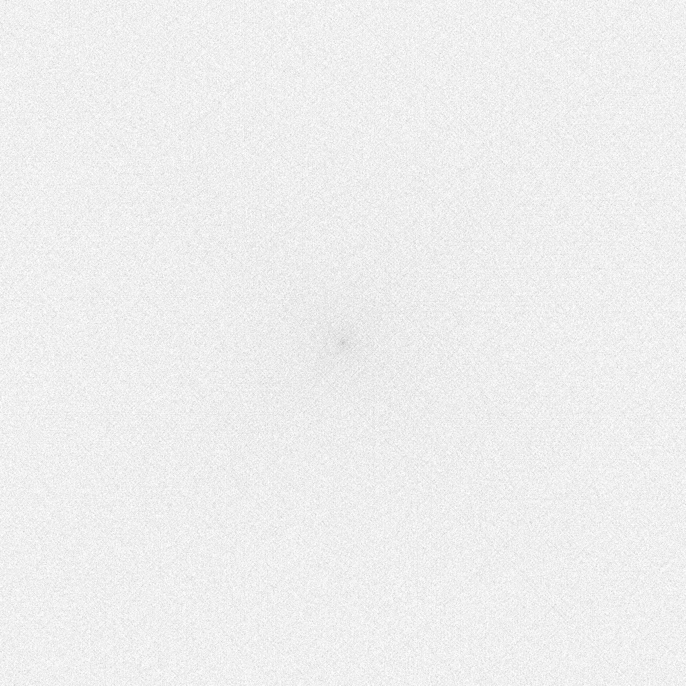

Espiral de Ulam
Primos en una retícula cuadrada · simulación local hasta 900.060.001
La espiral de Ulam coloca los enteros positivos desde el centro y marca los números primos. Las bandas diagonales son una consecuencia visual de que cada diagonal contiene valores de polinomios cuadráticos, no evidencia de un efecto físico o cuántico.
30.001²píxeles de la imagen máxima
900.060.001entero máximo analizado
46.012.125primos visualizados
5.001²píxeles de esta vista previa
Vista previa

Descargar PNG máxima (30.001 × 30.001)Descargar vista previa
{kind=link}
{kind=link}
Coordenadas
Para el punto (x, y), el anillo es r = max(|x|, |y|) y su máximo es M = (2r + 1)². El centro recibe el valor 1.
y = -r: n = M - (r - x)
x = -r: n = M - (2r + y + r)
y = r: n = M - (4r + x + r)
x = r: n = M - (6r + r - y)
Diagonales y primos
| Vértice | Polinomio en r |
|---|---|
| (r, −r) | (2r + 1)² |
| (−r, −r) | 4r² + 2r + 1 |
| (−r, r) | 4r² + 1 |
| (r, r) | 4r² − 2r + 1 |
Las diagonales paralelas desplazan estas cuadráticas. Algunas producen muchos primos en intervalos finitos, mientras la densidad promedio de primos decrece aproximadamente como 1 / log(n).